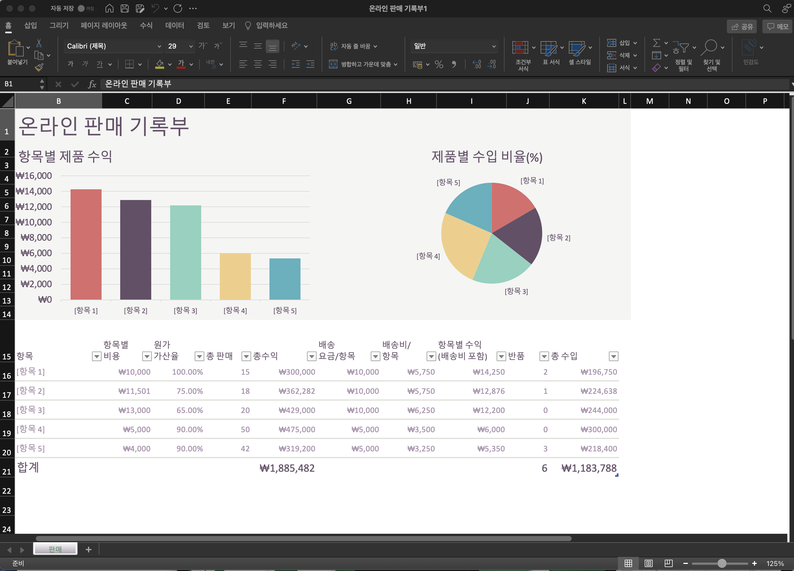
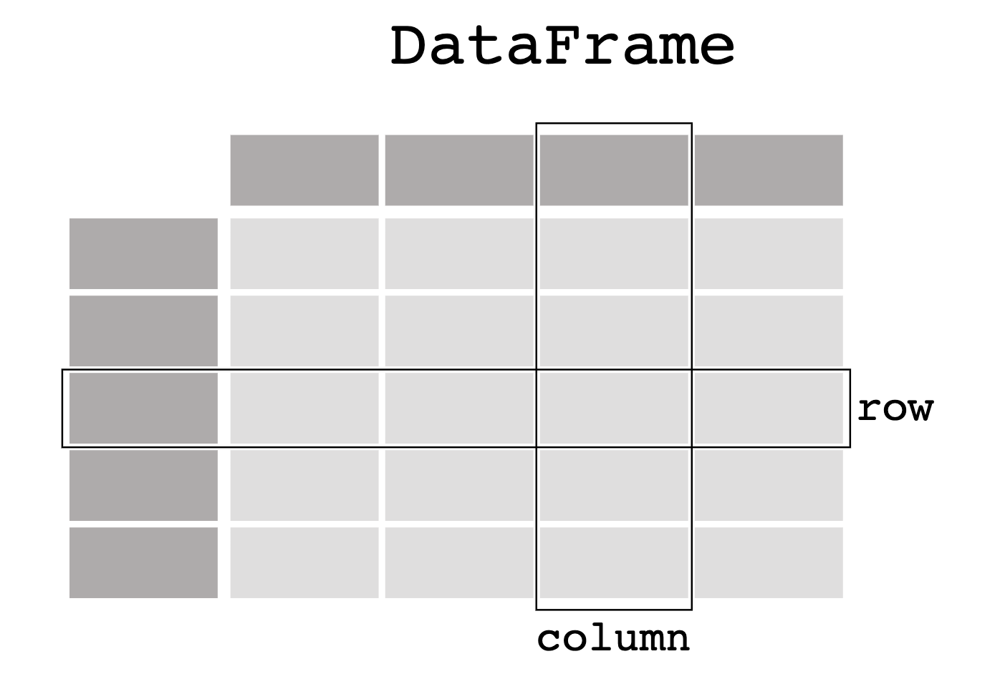
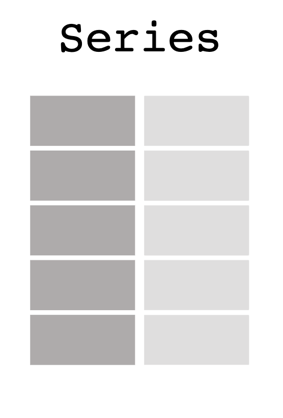

2.2. 데이터 처리¶
파이썬 프로그래밍 언어에 대하여 자세히 알아보기 전에 두 가지 예제를 통해서 파이썬 프로그램으로 데이터를 처리하는 연습을 해보려고 한다.
데이터를 다루고 정리하여 요약할 때 우리가 가장 쉽게 사용할 수 있는 컴퓨터 앱은 마이크로소프트 엑셀(MicroSoft Excel)이다.

많은 일상적인 작업이나 업무에서 엑셀에 데이터를 입력하고 제공하는 다양한 기능으로 데이터를 처리하여 원하는 결과를 얻는다. 이러한 엑셀을 이용한 작업은 기본적으로 사용자가 메뉴를 클릭하거나 손으로 복사하고 붙이는 일로 구성된다. 물론 엑셀도 자체 프로그래밍 언어을 이용할 수 있지만 대부분의 일상적인 작업들은 손으로 이루어지며 이는 다른 사람이 반복해서 재현하기 쉽지 않다.
파이썬 등 컴퓨터 언어를 이용하여 데이터를 처리하면 유사한 작업을 반복하기 쉽우며 작업 내용이 변경되어도 신속하게 적용하여 효율적으로 일을 할 수 있다. 즉, 자동화(automation)가 가능한 것이다. 기본적으로 컴퓨터 프로그램은 복잡한 작업을 자동화하는 기능을 하며 최근에는 기계학습과 인공지능으로 모든 분야에서의 자동화가 더욱 가속화되고 있다.
첫 번째 예제로 엑셀로 할 수 있는 자료를 처리하는 간단한 작업을 pandas 라이브러리에서 제공하는 데이터프레임(DataFrame)과 함수들을 이용하여 프로그램으로 구현해 볼 것이다.
두 번째 예제는 소설 어린 왕자의 텍스트 화일을 이용하여 소설에 특정한 문자열이 나타나는 빈도를 구하는 간단한 프로그램을 만들어 본다.
2.2.1. pandas 라이브러리¶
먼저 pandas 라이브러리를 불러오자. 앞 절에서 설명한 것처럼 명령어 import 를 사용하여 pandas 라이브러리를 불러오는데 다음과 같은 명령어를 실행한다.
아래 명령어에서 as 는 pandas 라이브러리를 불러올 때 그 이름을 줄여서 pd 로 하겠다는 의미이다.
import pandas as pd
2.2.2. 데이터프레임¶
2.2.2.1. 데이터프레임 정의¶
pandas 라이브러리의 데이터프레임은 표와 같은 스프레드시트 형식의 자료 구조를 제공한다. 즉, 2차원 행렬 데이터로 행(row)과 열(column)으로 이루어 졌으며 일반적으로 행은 자료의 레코드를 나타내며 열은 변수로 구성된다.

이제 4명의 학생의 이름(name), 성별(sex), 나이(age)로 구성된 4개의 행과 3개 열을 가진 데이터프레임 df 를 만들어 보자.
pd.DataFrame() 는 pd 로 지정된 pandas 라이브러리의 함수 DataFrame() 을 사용하겠다는 의미이다.
라이브러리의 함수 DataFrame의 괄호 안에 인자는 괄호 { 로 시작하여 괄호 } 로 끝나는 표현식이 들어 간다.
괄호
{}안에 있는 표현식은 나중에 배울 사전(dictionary) 형식의 데이터를 만들어 준다.
괄호 {} 안에 있는 첫 번째 요소는 이름을 나타내는 열을 만드는 표현식이며 열의 이름은 name 이고 원소들은 성명으로 구성된 리스트이다.
'name' : ['이철수', '김영희', '홍길동', 'John Smith']
괄호 {} 안에 있는 두 번째 요소는 성별을 나타내는 열을 만드는 표현식이며 열의 이름은 sex 이고 원소들은 문자열 m 과 'f 로 구성된 리스트이다.
'sex' : ['M', 'F', 'M', 'M']
괄호 {} 안에 있는 세 번째 요소는 나이을 나타내는 열을 만드는 표현식이며 열의 이름은 age 이고 원소들은 정수로 구성된 리스트이다.
'age' : [ 23, 25, 21, 33]
각 열을 나타내는 3개의 요소는 쉼표로 분리한다.
df = pd.DataFrame(
{ 'name' : ['이철수', '김영희', '홍길동', 'John Smith'],
'sex' : ['M', 'F', 'M', 'M'],
'age' : [ 23, 25, 21, 33]
} )
df
| name | sex | age | |
|---|---|---|---|
| 0 | 이철수 | M | 23 |
| 1 | 김영희 | F | 25 |
| 2 | 홍길동 | M | 21 |
| 3 | John Smith | M | 33 |
2.2.2.2. 데이터프레임 슬라이싱¶
이제 데이터프레임이 정의되었다. 데이터프레임울 출력할 때 가장 왼쪽 열이 나타난 숫자 0,1,2,3 은 각 행의 인덱스를 나타낸다.
이제 데이터프레임의 하나의 열을 따로 지정하여 슬리이싱해보자. 데이터프레임의 열을 슬라이싱할 때는 열의 인데스로 열의 이름(문자열)을 사용한다.
df['name']
0 이철수
1 김영희
2 홍길동
3 John Smith
Name: name, dtype: object
df['age']
0 23
1 25
2 21
3 33
Name: age, dtype: int64
두 개 이상의 열들을 슬라이싱하려면 리스트를 사용한다.
df[ ['age', 'name'] ]
| age | name | |
|---|---|---|
| 0 | 23 | 이철수 |
| 1 | 25 | 김영희 |
| 2 | 21 | 홍길동 |
| 3 | 33 | John Smith |
데이터프레임의 열을 슬라이스할 때 유의할 점은 데이터프레임의 열의 인덱스는 숫자가 아닌 문자열 name 이다. 따라서 데이터프레임의 열에 대한 인덱스로서 문자가 가능하다.
데이터프레임의 하나의 열은 시리즈(Series)라고 부른다.

참고로 데이터프레임의 열을 슬라이스하는 경우 괄호 [] 를 사용하지 않고 다음과 같이 마침표 . 를 사용할 수 있다.
df.age
0 23
1 25
2 21
3 33
Name: age, dtype: int64
이제 데이터프레임 df 에서 나이가 25세 이상인 행들만 선택해 보자. 일단 나이로 구성된 시리즈에 다음과 같이 비교연산자를 사용할 수 있다.
df['age'] >= 25
0 False
1 True
2 False
3 True
Name: age, dtype: bool
논리 표현식 df['age'] >= 25 의 결과는 참과 거짓으로 구성된 시리즈이다.
이제 참과 거짓으로 구성된 시리즈를 인덱스로 이용하여 데이터프레임 df 의 행을 슬라이싱하자.
df[ df['age'] >= 25 ]
| name | sex | age | |
|---|---|---|---|
| 1 | 김영희 | F | 25 |
| 3 | John Smith | M | 33 |
2.2.2.3. 데이터프레임 메소드¶
데이터프레임에서 숫자로 구성된 열들의 기초 통계량은 다음과 같이 구할 수 있다.
df.describe()
| age | |
|---|---|
| count | 4.000000 |
| mean | 25.500000 |
| std | 5.259911 |
| min | 21.000000 |
| 25% | 22.500000 |
| 50% | 24.000000 |
| 75% | 27.000000 |
| max | 33.000000 |
앞에서 여러 번 보았듯이 파이선에서는 마침표가 자주 사용된다. df.describe()는 데이터프레임 df 의 열들 중에 숫자로 구성된 열의 가초 통계량을 함수 describe() 로 구하는 표현식이다.
데이터프레임 df 마침표 뒤에 나오는 함수 또는 표현식을 데이터프레임의 메소드(method) 라고 부른다.
마침표 뒤에 나오는 함수는 데이터프레임에 지정한 작업을 수행한다.
마침표 뒤에 나오는 표현식은 데이터프레임의 특정 성질을 나타내 준다.
유사한 형식으로 데이터프레임 df 의 각 열에 대한 최대값도 구할 수 있다. 아래 명령어들이 무슨 작업을 하는 것인가 생각해 보자.
# 함수 max() 는 각 열의 최대값을 구하는 작업을 수행
df.max()
name 홍길동
sex M
age 33
dtype: object
# 표현식 shape 는 행과 열의 개수를 출력 (행의 개수 =4, 열의 개수 =3)
df.shape
(4, 3)
데이터프레임 df 의 원소는 행과 열의 숫자로 구성된 인덱스로 슬라이싱할 수 있다. 이 때 사용되는 메소드가 iloc이며 특별하게 괄호 [] 를 사용하고
행과 열의 인덱스를 쉼표로 구분한다.
아래 명령어는 데이터프레임 df의 두 번째 행(index=1)과 첫 번째 열(indec=0)에 해당하는 원소를 슬라이싱한다.
df.iloc[1,0]
'김영희'
df.iloc[2,2]
21